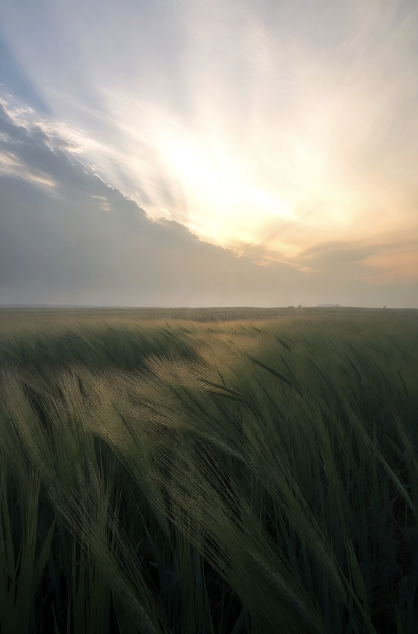
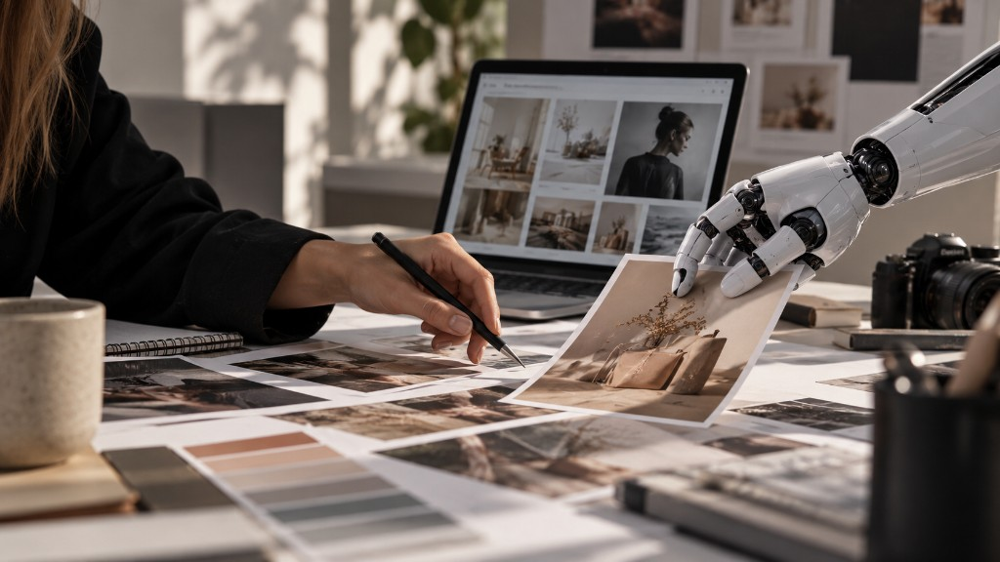
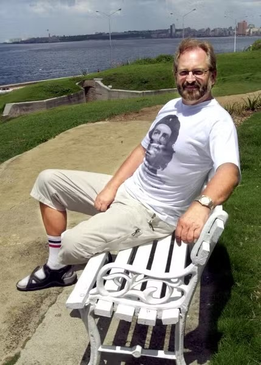

Utgave 01 — høsten 2026
Utenfor rammene
Et uavhengig magasin om kultur, musikk, kunst, design og menneskene bak historiene
Utforsk utgaven
Fra redaksjonen
En historie verdt å høre

Musikk og kultur
Halden Rock City
Rockelivet lever videre i grensebyen.
Les artikkelenI denne utgaven
Fire historier. Fire perspektiver. Én utgave.
Her møter du rockehistorie, samtidskunst, teknologi og menneskene som setter sitt preg på kulturen.

Halden Rock City
Halden har i flere tiår vært kjent som en av Norges viktigste rockebyer.
Les artikkelen
Fra kunstprosjekt til helårsgalleri
Cube8 Gallery i Fredrikstad skulle opprinnelig arrangere fire utstillinger i året.
Les artikkelen
AI endrer markedsføringen: Frykter tap av troverdighet
Kunstig intelligens endrer markedsføringsbransjen i høyt tempo – og kan svekke bedrifters troverdighet.
Les artikkelen
Kinosjefen som heller ba om tilgivelse
Han kunne nesten ingenting om film da han ble kinosjef i Fredrikstad i 1994.
Les artikkelen